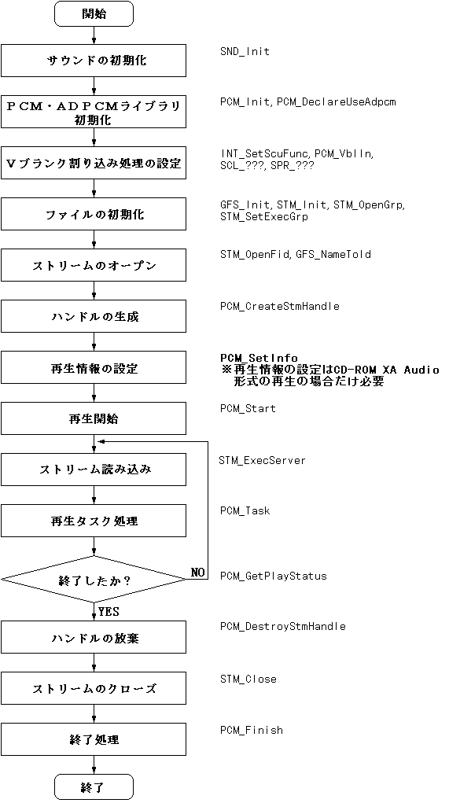

★PROGRAMMER'S GUIDE
★PCM・ADPCM再生ライブラリ
★PROGRAMMER'S GUIDE
★PCM・ADPCM再生ライブラリ
図3.1 ストリーム再生時の再生手順

#define RING_BUF_SIZE (2048L*10)
#define PCM_ADDR ((void*)0x25a20000)
#define PCM_SIZE (4096L*2)
/* ワーク */
PcmWork pcm_work;
/* リングバッファ */
Uint32 ring_buf[RING_BUF_SIZE / sizeof(Uint32)];
StmHn stm;
PcmHn pcm;
/* サウンドの初期化 */
SND_Init(･･);
/* 初期化 */
PCM_Init();
/* ＡＤＰＣＭ使用宣言 (ADPCMを使用する場合に必須) */
PCM_DeclareUseAdpcm();
/* 割り込み処理の設定 */
INT_??? を使いＶブランクＩＮ割り込みを設定する。
ＶブランクＩＮ割り込み内で PCM_VblIn(); をコールする。
/* ファイルの初期化 */
GFS_Init(･･);
STM_Init(･･);
STM_OpenGrp();
STM_SetExecGrp(･･);
/* ストリームのオープン */
stm = STM_OpenFid(･･);
/* ハンドルの生成 */
PCM_PARA_WORK(¶) = &pcm_work;
PCM_PARA_RING_ADDR(¶) = ring_buf;
PCM_PARA_RING_SIZE(¶) = RING_BUF_SIZE;
PCM_PARA_PCM_ADDR(¶) = PCM_ADDR;
PCM_PARA_PCM_SIZE(¶) = PCM_SIZE;
pcm = PCM_CreateStmHandle(¶, stm);
/* 再生開始 */
PCM_Start(pcm);
while(TRUE) {
/* サーバーの実行 */
STM_ExecServer();
/* 再生タスク処理 */
PCM_Task(pcm);
/* 終了判定 */
if (PCM_GetPlayStatus(pcm) == PCM_STAT_PLAY_END) break;
}
/* ハンドルの放棄 */
PCM_DestroyStmHandle(pcm);
/* ストリームのクローズ */
STM_Close(stm);
/* 終了処理 */
PCM_Finish();
★PROGRAMMER'S GUIDE
★PCM・ADPCM再生ライブラリ